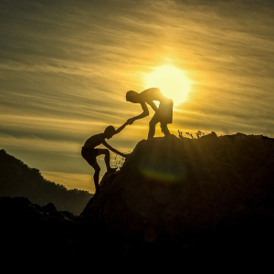
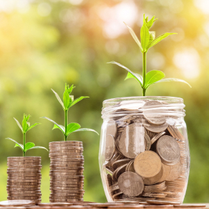

상생경영
지역사회가 가족이며 동반자라는 철학을 실천합니다.
공동성장을 위한 약속
한화는 2009년 이후 매년 약 1천 5백여 개의 중소 협력사와 '공정거래 및 동반성장 협약'을 체결하고 이를 성실히 이행하고 있습니다. 한화의 발전에 조력해 온 공로자로서 협력업체들이 글로벌 경쟁력을 갖춘 강소기업으로 성장할 수 있도록 발의된 이 협약은 대·중소기업 간 동반성장, 공정거래 질서 확립 및 중소기업들의 근원적 경쟁력 제고를 위한 제안 등을 근간으로 하고 있습니다. 또한 매년 각각 2천억 원 규모의 상생펀드와 동반성장 사모펀드(PEF)를 조성, 운영해 중소 협력사들의 자금난 개선에 실질적인 도움을 주고 있습니다.
-
공정거래 및 동반성장 협약
-
상생펀드 및 사모펀드 조성
-

지역사회 성장 지원
-

소셜 임팩트 투자
한화의 성장지원
'신용과 의리'의 한화정신으로 협력업체와의 소통을 지속하고 있습니다.
-
협력업체강화
계열사별로 협력사 간담회 및 동반성장협의회 등을 정례화하는 한편 사업 공동 참여, 기술·정보 교류, 계약 이행보증 면제 등 협력업체와 '함께 멀리'라는 철학을 실천에 옮기고 있습니다. 혁신 컨설팅, 장비 구입 지원, 안전 관리 및 공정·환경·품질 관리 등을 지원하고 있으며 국내 판로 확대와 해외진출 지원으로 협력사의 경쟁력 강화에 힘을 보태고 있습니다.
[닫기]
EU REACH, EU Food Contact Material 등 확인·등록 완료 -
지역사회 성장
한화는 농어촌 지역의 숨은 명품을 발굴해 백화점 등 유통 채널에 입점할 수 있는 기회를 제공, 농어민 소득 확대에 기여하고 있습니다. 또한 태양광 연계 ESS(Energy Storage System) 기술을 활용한 마이크로그리드 사업 역량을 바탕으로 충청남도 홍성군 죽도를 에너지 자립섬으로 재탄생시켜, 지역사회의 에너지 비용 절감과 관광 자원 활성화에 기여했습니다.
[닫기]